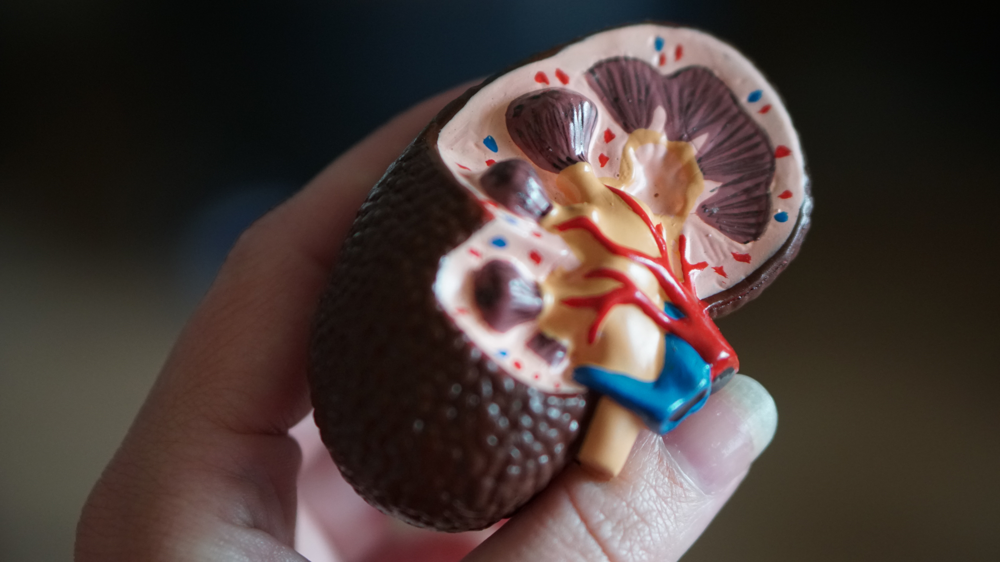

Nephrotic syndrome is a condition that causes the kidneys to leak large amounts of protein into the urine. This can lead to a range of problems, including swelling of body tissues and a greater chance of catching infections.Although nephrotic syndrome can affect people of any age, it's usually first diagnosed in children aged between 2 and 5 years old. It affects more boys than girls.

Around 1 in every 50,000 children are diagnosed with the condition each year. It tends to be more common in families with a history of allergies or those of an Asian background, although it's unclear why. The symptoms of nephrotic sy오후 9:44 2021-11-29ndrome can usually be controlled with steroid medication. Most children with nephrotic syndrome respond well to steroids and are not at risk of kidney failure.